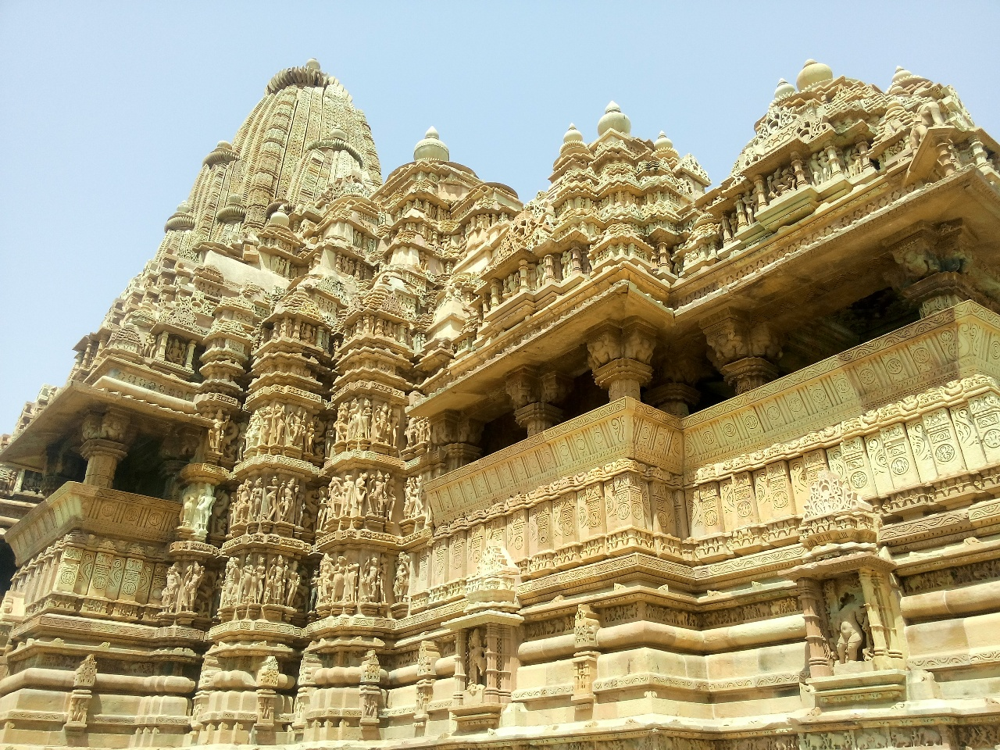
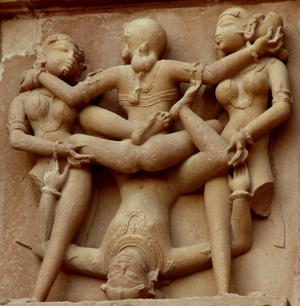

Khajuraho
The Khajuraho Group of Monuments is a group of Hindu and Jain temples in Madhya Pradesh, India, about 175 kilometres (109 mi) southeast of Jhansi. They are one of the UNESCO World Heritage Sites in India. The temples are famous for their nagara-style architectural symbolism and their erotic sculptures. Most Khajuraho temples were built between 950 and 1050 by the Chandela dynasty. Historical records note that the Khajuraho temple site had 85 temples by the 12th century, spread over 20 square kilometers. Of these, only about 25 temples have survived, spread over 6 square kilometers. Of the various surviving temples, the Kandariya Mahadeva Temple is decorated with a profusion of sculptures with intricate details, symbolism and expressiveness of ancient Indian artintricate details, symbolism and expressiveness of ancient Indian art.
History
The Khajuraho group of monuments was built during the rule of the Rajput Chandela dynasty. The building activity started almost immediately after the rise of their power, throughout their kingdom to be later known as Bundelkhand. Most temples were built during the reigns of the Hindu kings Yashovarman and Dhanga. Yashovarman's legacy is best exhibited by The Lakshmana Temple. Vishvanatha temple best highlights King Dhanga's reign. The largest and currently most famous surviving temple is Kandariya Mahadeva built in the reign of King Vidyadhara. The temple inscriptions suggest many of the currently surviving temples were complete between 970 and 1030 CE, with further temples completed during the following decades.
Tourism and cultural events
The temples in Khajuraho are broadly divided into three parts : the Eastern group, the Southern Group and the Western group of temples of which the Western group alone has the facility of an Audio guided tour wherein the tourists are guided through the seven eight temples. There is also an audio guided tour developed by the Archaeological Survey of India which includes a narration of the temple history and architecture.
Khajuraho
Places



 The Khajuraho temples feature a variety of art work, of which 10% is sexual or erotic art outside and inside the temples. Some of the temples that have two layers of walls have small erotic carvings on the outside of the inner wall. Some scholars suggest these to be tantric sexual practices. Other scholars state that the erotic arts are part of Hindu tradition of treating kama as an essential and proper part of human life, and its symbolic or explicit display is common in Hindu temples. James McConnachie, in his history of the Kamasutra, describes the sexual-themed Khajuraho sculptures as "the apogee of erotic art".
 The temples have several thousand statues and art works, with Kandarya Mahadeva Temple alone decorated with over 870. Some 10% of these iconographic carvings contain sexual themes and various sexual poses. A common misconception is that, since the old structures with carvings in Khajuraho are temples, the carvings depict sex between deities, however the kama arts represent diverse sexual expressions of different human beings. The vast majority of arts depict various aspects the everyday life, mythical stories as well as symbolic display of various secular and spiritual values important in Hindu tradition.For example, depictions show women putting on makeup, musicians making music, potters, farmers, and other folks in their daily life during the medieval era. These scenes are in the outer padas as is typical in Hindu temples.
The temples have several thousand statues and art works, with Kandarya Mahadeva Temple alone decorated with over 870. Some 10% of these iconographic carvings contain sexual themes and various sexual poses. A common misconception is that, since the old structures with carvings in Khajuraho are temples, the carvings depict sex between deities, however the kama arts represent diverse sexual expressions of different human beings. The vast majority of arts depict various aspects the everyday life, mythical stories as well as symbolic display of various secular and spiritual values important in Hindu tradition.For example, depictions show women putting on makeup, musicians making music, potters, farmers, and other folks in their daily life during the medieval era. These scenes are in the outer padas as is typical in Hindu temples.